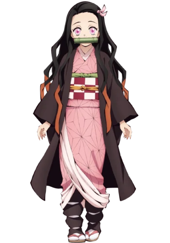

HISTÓRIA
PERSONAGENS

A História do Caçador de Demônios
A narrativa de Demon Slayer é ambientada no Japão no início do século XX
e mostra a história de Tanjiro Kamado, um jovem gentil que um dia descobre que sua família foi assassinada por demônios.
Ele então decide se tornar um Caçador de Demônios (Demon Slayer, em inglês) para vingar a sua família e para ajudar a sua irmã Nezuko,
única sobrevivente do ataque e que está se transformando em um demônio também.
Surpreendentemente, Nezuko ainda demonstra sinais de emoções e pensamentos humanos,
e assim os dois partem em uma jornada pelo Japão para acabar com os demônios e ajudar a impedir que outras pessoas sofram com a mesma tragédia que atingiu a sua família.
Mas é claro que ninguém se torna um caçador de demônios da noite para o dia,
e para isso Tanjiro terá que passar por um duro treinamento para entrar em uma sociedade secreta de caçadores,
que há séculos trava uma guerra contra os demônios.
Durante a Seleção Final, Tanjiro usa um quimono azul com estampa de nuvens no estilo jinbei e calças pretas, quase idênticas à roupa de Sakonji.
Ele ainda usa seus brincos hanafuda, mas seu cabelo é cortado extremamente curto e permanece o mesmo comprimento desde então.
Semelhante ao resto dos aprendizes que foram treinados por Sakonji, Tanjiro usa uma máscara de raposa esculpida à mão feita por seu mestre no lado esquerdo de sua cabeça.
A máscara tem acentos vermelhos nos olhos, orelhas e manchas em cada canto da boca. No canto superior direito da máscara, há um desenho em forma de sol que provavelmente simboliza a cicatriz em sua testa.
Depois de se tornar um Caçador de Oni, Tanjiro usa o uniforme padrão de Caçador de Oni, uma jaqueta gakuran marrom-escura, um cinto branco, calças largas que se estendem até as meias tabi,
um par de zōri com tiras vermelhas e faixas de pano branco enroladas firmemente em torno de suas panturrilhas, tudo sob sua icônica haori xadrez. Ele carrega uma grande caixa de madeira nas costas
(que foi um presente de Sakonji Urokodaki), onde sua irmã dorme enquanto viajam durante o dia.
Durante seu segundo encontro com Muzan Kibutsuji, ele fere o olho direito no Castelo do Infinito. Conforme a batalha avança, Tanjiro desmaia repentinamente e seu ferimento começa a formar uma grande massa sobre seu olho direito devido ao veneno infligido a ele por Muzan.
Mais tarde, quando Tanjiro acorda, ele é descrito como 'repulsivo' por Muzan. Mais tarde na batalha, o braço esquerdo de Tanjiro é decepado por Muzan.
Depois de ser transformado em um Oni por Muzan, Tanjiro é capaz de curar o tumor em seu rosto, bem como regenerar seu braço perdido e outros ferimentos menores.
Ele obtém olhos com pupilas cortadas, presas e marcas em forma de chama sobre sua testa esquerda e mandíbula direita que lembram os de Kokushibo,
além de uma terceira marca em forma de chama menor descendo do lado direito de sua cabeça até sua sobrancelha depois que ele conquistou a fraqueza à luz do sol.
Sua cicatriz se transforma em um padrão de chamas como se fosse uma Marca de Caçador de Oni permanente, torna-se mais longa e é a maior das três, e todas as três marcas apontam vagamente para seu nariz, embora apenas a marca da cicatriz o alcance. Ele ainda veste seu uniforme manchado de sangue, uma manga arrancada onde seu braço foi decepado, mas perde seu haori xadrez e a lâmina de Nichirin em seu quadril.
Depois de retornar à sua forma humana, Tanjiro perde a capacidade de ver com seu olho direito, cuja íris é agora uma cor cinza-rosa fosca e a pupila preta em vez de seu branco original.
Seu braço esquerdo, que ele recuperou como um demônio, agora assume a aparência do braço de uma pessoa idosa, tornando-se enrugado e esquelético, junto a isso, ele perde toda a sensibilidade abaixo do cotovelo e, portanto, a capacidade de movê-lo de seu ombro para baixo.


- Tanjiro é um jovem de pele bastante bronzeada e físico atlético. Ele tem cabelo preto despenteado com pontas cor de vinho, penteado para trás para expor a testa, e olhos grandes e vermelho-escuros com pupilas brancas que parecem mais claras ao redor da parte inferior de suas íris. Ele também tem uma cicatriz no canto superior esquerdo da testa, que recebeu quando protegeu seu irmão mais novo da queda de um braseiro. A cicatriz originalmente parecia um arranhão até sua luta com o Oni da Mão durante a Seleção Final, após o qual se transforma em sua Marca de Caçador de Onis. É notado que suas mãos são visivelmente mais ásperas para alguém de sua idade, como resultado de seu treinamento rigoroso sob Sakonji Urokodaki. Tanjiro parece notavelmente semelhante em aparência a seu ancestral Sumiyoshi, possuindo a mesma estrutura facial, olhos e penteado que ele, embora o cabelo de Sumiyoshi fosse mais longo na altura dos ombros e era amarrado em um rabo de cavalo atrás de sua cabeça.
Tanjiro aparece pela primeira vez vestindo um haori xadrez preto e verde espuma-do-mar sobre uma túnica branca e calças pretas. Ele ocasionalmente usa um lenço turquesa e é visto com faixas brancas circulares em volta das panturrilhas. Ele também usa um par distinto de brincos hanafuda, com a imagem de uma flor branca e vermelha. Seu cabelo também é mantido preso em um pequeno rabo de cavalo ou coque; enquanto ele treina com Sabito e Makomo, seu cabelo cresce até os ombros.

- Zenitsu é um jovem de pele clara e olhos inclinados para baixo e assustados que vão do castanho claro ao dourado. Ele tem um cabelo curto e amarelo de comprimentos variados, cortado reto nas pontas, onde desaparece para uma cor laranja mais escura, que cai na frente de seu rosto em franjas irregulares. Antes de se tornar um Caçador de Oni, o cabelo de Zenitsu era originalmente preto, mas mudou para a cor atual quando ele foi atingido por um raio durante seu treinamento.
Por algum tempo após a batalha no Monte Natagumo, seus membros encolheram temporariamente devido ao veneno demoníaco, mas foram capazes de voltar ao normal graças ao medicamento dado a ele por Shinobu Kocho.
Ele usa uma versão marrom mais clara do uniforme padrão do Esquadrão de Caçadores, que consiste em uma jaqueta gakuran marrom escuro, um cinto branco em volta da cintura e calças hakama que se estendem, bem como seu padrão de triângulo branco, haori gradiente amarelo e laranja. Além disso, Zenitsu também ostenta um par de meias tabi, amarradas na frente com 3 laços brancos, com o mesmo padrão de seu haori, e calçado de renda branca.
 
- Nezuko é uma jovem pequena com pele clara, presas visivelmente grandes e proeminentes e unhas afiadas e stiletto com uma cor base de rosa claro e ombre desvanecendo-se para uma cor vermelho-rosada no final onde apontam. Seu cabelo é longo, preto e ondulado. Ele chega logo abaixo da cintura, ficando com uma cor laranja-fogo quando passa pelos cotovelos, e parece ser frisado em grandes cristas retas, desgastado drasticamente para a esquerda. Ela tem olhos rosa pálido de aparência suave que parecem uma cor mais clara ao redor das bordas de suas íris, inclinados para baixo em direção aos lados do rosto e emoldurados por cílios notavelmente longos, cujas pupilas podem parecer cortadas à medida que ela se transforma. No mangá, Nezuko às vezes pode ser mostrado com mais de um arco. De acordo com Tanjiro Kamado, Nezuko era conhecida como uma grande beleza em sua cidade natal.[4]
Ela usa um quimono rosa claro com um padrão de asanoha (folha de cânhamo), o forro de um rosa pálido, protegido por um hanhaba obi xadrez vermelho e branco com um obijime de fio laranja e um obiage verde. Sobre isso, ela ostenta um longo haori marrom-escuro que atinge suas panturrilhas, bem como um par de zōri com tiras rosa e meias brancas de tabi, envoltas com pedaços grossos de material preto parecido com kyahan. Nezuko também usa uma pequena fita rosa no lado esquerdo de sua cabeça para manter o cabelo fora do rosto, junto com o focinho de bambu que Giyu Tomioka deu a ela, que é preso ao redor de sua mandíbula com uma tira de pano vermelho.

- Inosuke é um jovem de estatura média e pele pálida com uma construção extremamente tonificada e musculosa para sua idade, possuindo músculos grandes e definidos, principalmente sobre o estômago e os braços. Em nítido contraste com isso, ele tem um rosto incrivelmente bonito e feminino, com olhos grandes e arregalados que são emoldurados por uma série de cílios longos, suas íris de um verde escuro a suave, sobrancelhas finas e o que poderia ser um pequeno , boca bem-educada. Seu cabelo espesso e preto chega logo abaixo dos ombros, desbotando em azul nas pontas e formando uma franja rebelde e irregular que cai logo acima de seus olhos, inchando antes de curvar e diminuir em direção à testa.
Inosuke usa sua versão alterada do uniforme padrão do Demon Slayer, que consiste apenas nas calças largas de hakama, tingidas de um cinza-azulado escuro, que ele prende em torno de seus quadris com um cinto grosso de pele de veado marrom.[4] Ao contrário de seus companheiros de viagem, Inosuke não usa um haori. As habituais faixas de tecido nas pernas são substituídas pelo que parecem ser meias de couro de urso na altura do joelho [4] que expõem seus calcanhares e dedos dos pés, que também parecem ser o que prende as bases das sandálias que ele usa em seus pés. Sua característica mais marcante é a cabeça de javali cinza e oca que ele usa para mascarar a sua, cujos olhos ele adulterou para permitir a visão enquanto a usava, [5] que foi revelado ter pertencido ao seu falecido mãe adotiva de javali.
VOLTAR AO TOPO